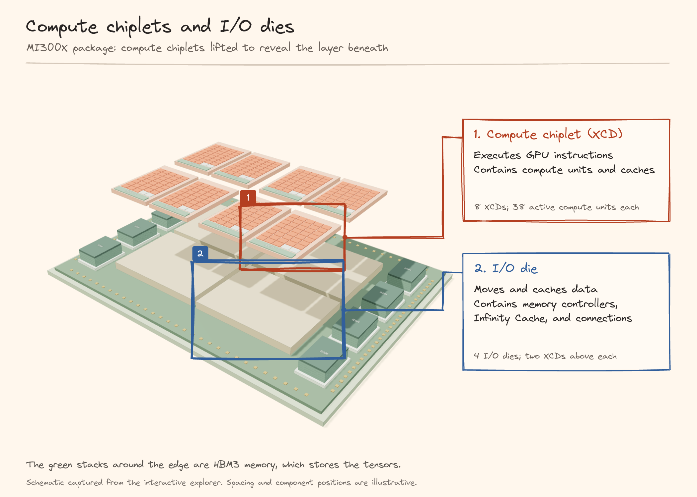
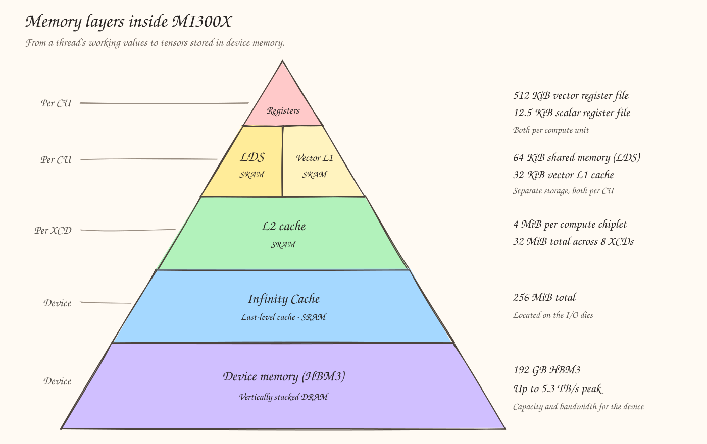
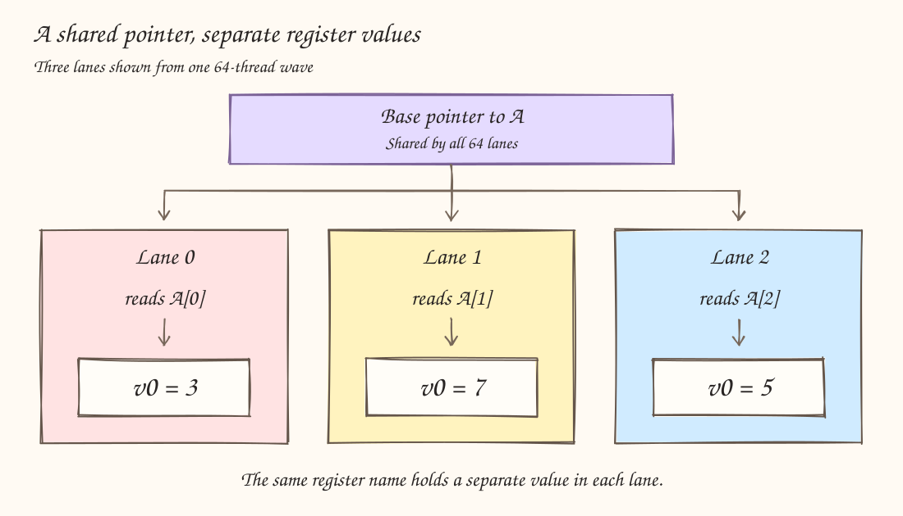
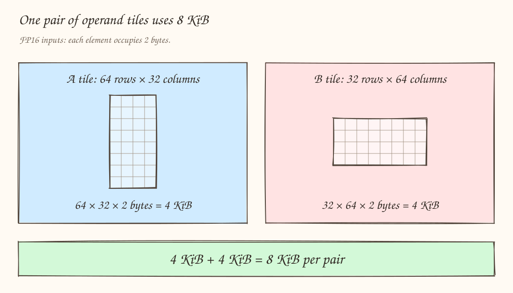
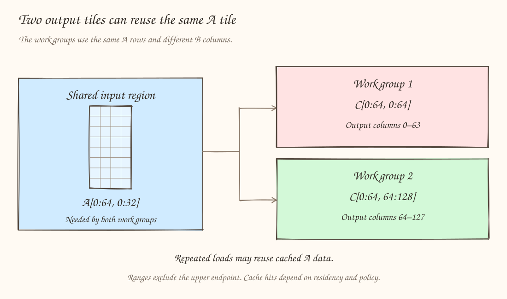
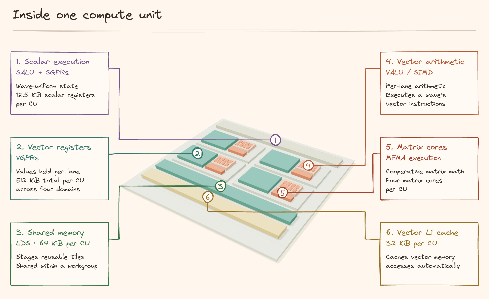
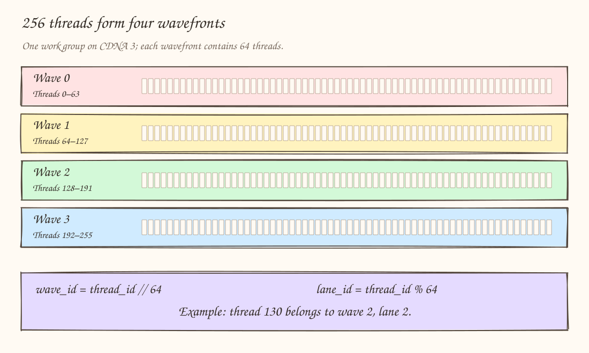

In Part 1, we had a gentle introduction to the AMD terms for the CUDA vocabulary - SM becomes CU, warp becomes wavefront, and shared memory becomes LDS. That's a nice place to get started. Now we are in a position to be able to read and understand the hardware and it's important we do this before writing any kernels.
In this blog post, we will be exploring the MI300X, a high performance data center accelerator and finish up with a simple GEMM implementation in Gluon.
From the GPU package down to its threads
One GPU, eight compute chiplets
MI300X is built from eight Accelerator Complex Dies, or XCDs, stacked over four I/O dies. Each XCD has 40 physical compute units, with 38 active. That gives us 8 x 38 = 304 active CUs. Two XCDs sit above each I/O die.
What is an XCD, and how is it different from an I/O die?
A die is an individual piece of silicon inside the GPU package. MI300X uses different dies for computation and for moving data. An XCD is a compute chiplet that contains the compute units that execute our kernel, along with their registers, shared memory, and caches. The I/O die contains memory controllers that manage reads and writes to high-bandwidth memory (HBM).

SPX Mode
What is this SPX Mode? SPX stands for Single Partition X-celerator. In this mode, all eight XCDs appear to software as one GPU with 304 compute units. We launch one grid of workgroups on that GPU, and the hardware distributes the work across its compute units. We don't need separate launches for each XCD. In other words, this is saying the whole MI300X is configured to operate as one GPU. AMD's MI300X partitioning guide explains this mode and the alternatives that expose smaller logical GPUs.
Memory layers
MI300X stores data in several places, from the registers holding a thread's working values to the HBM3 memory holding our tensors. These stores differ in capacity, how they are accessed, and which threads share them. The pyramid below shows the main layers used by a matrix multiplication.

1. Registers
Let's say 64 threads execute together as one wave, and each thread loads a different element of A. A thread's position within that wave is called its lane. Lane 0 might load the value 3 from A[0], while lane 1 loads 7 from A[1]. Both execute the same load instruction, but each needs somewhere to keep its own result.

A vector register holds one value per lane. The register named v0 can hold the value 3 for lane 0, 7 for lane 1, and 5 for lane 2. A scalar register holds one value for the whole wave. A common base pointer or loop bound can use scalar registers when the compiler recognizes that it is the same for every lane.
In GEMM, vector and accumulator registers hold the A/B fragments being multiplied and the running sums for the outputs. MI300X provides 512 KiB of vector-register storage and 12.5 KiB of scalar-register storage per compute unit. Those are shared across all the waves resident on that compute unit. Each thread gets a portion of the available registers, rather than its own 512 KiB.
2. LDS
Now suppose one workgroup computes a 64 x 64 output tile, advancing through K in steps of 32. For one step, it needs a 64 x 32 tile of A and a 32 x 64 tile of B. With FP16 inputs, the two tiles occupy:

There is a lot of reuse here. The value A[0,0] contributes to every output from C[0,0] through C[0,63], because those outputs multiply it by different elements of B. In a regular ol' GEMM, the workgroup cooperatively loads its operand tiles into Local Data Share, or LDS. Its threads then read the fragments they need from that shared tile as they perform the matrix operations.
LDS provides 64 KiB per compute unit, divided among its resident workgroups. Each workgroup has its own allocation. In HIP, the kernel declares this storage with __shared__. This is basically shared memory that you have in CUDA.
3. L1
A normal load requests an address in global memory. If the requested data is already in the compute unit's vector L1 cache, the hardware can serve that request locally. A later load of a nearby element may also benefit because caches store chunks of adjacent bytes called cache lines.
The hardware manages L1's contents. With LDS, the kernel or compiler explicitly chooses which tiles to stage and when threads can consume them. With L1, a cache hit depends on the access policy and whether the data is still present. MI300X has a 32 KiB vector L1 cache per compute unit, separate from its 64 KiB LDS these are two independent stores. An LDS allocation does not consume that L1 capacity.
4. L2
Consider two workgroups computing neighboring output tiles. Both use the same rows of A, but different columns of B.

If these workgroups run on different compute units within the same XCD, they have separate L1 caches but share that XCD's L2 cache. A request from one workgroup can populate L2, letting the other reuse the same A data if it remains cached. The workgroups each issue their own loads while the cache handles the reuse.
Each XCD has 4 MiB of L2 shared by its 38 active compute units. Eight XCDs give 32 MiB in total, distributed as eight separate 4 MiB caches. Workgroup ordering can influence reuse, although a program ID does not guarantee placement on a particular XCD.
5. Infinity Cache
Infinity Cache is AMD's last-level cache, also called L3. It has 256 MiB across the device, located on its I/O dies. If a request cannot be served by the nearer caches, the memory system can serve it from Infinity Cache when the data is present, avoiding an HBM access.
Take the same two output tiles above, but suppose their workgroups execute on different XCDs. Each XCD has its own L2. Reused A data may still be available in Infinity Cache, so requests that miss in the second XCD's local caches can benefit from the larger cache near memory.
The tl.load operation when you load data can benefit from these caches automatically. We keep loading A and B through their global memory pointers, and the hardware handles the eligible cache lookups. Cache residency and hits are not guaranteed. Tile sizes and execution order affect how much data gets reused before it is evicted to make room for other cache lines.
6. HBM3
When we allocate A, B, and C on the GPU, their global-memory storage is backed by HBM3. For example, a 4,096 x 4,096 FP16 matrix occupies 4,096 x 4,096 x 2 bytes = 32 MiB. Two input matrices and one output of that shape therefore require 96 MiB of tensor storage.
A workgroup processes small tiles from these matrices at a time. Cached copies may serve its loads, LDS can hold tiles for reuse, and registers hold the current fragments and running sums. When its output tile is complete, the kernel writes the results to C in global memory.
MI300X has eight HBM3 stacks, advertised as 192 GB of capacity and up to 5.3 TB/s peak bandwidth for the whole device. HBM capacity tells us how much tensor data can be stored. Bandwidth tells us how quickly bytes can be transferred under suitable conditions. Reusing data in registers, LDS, or caches reduces how often the kernel needs to access HBM.
A compute unit is where a workgroup executes
If you know CUDA, a compute unit (CU) plays the role of an SM. The CU is the hardware that runs the work. A workgroup is a collection of threads assigned to that hardware, and a wave is a smaller execution group within the workgroup.
| Nvidia | AMD | Meaning |
|---|---|---|
| Warp | Wavefront, or wave | A group of threads that execute in lockstep: 32 on NVIDIA, 64 on MI300X |
| Thread block | Workgroup, also called a HIP block | Programming abstraction for a group of threads that execute together |
| Streaming multiprocessor (SM) | Compute unit (CU) | The hardware that does computation and storage |
For example, a 256-thread workgroup contains four 64-thread waves. All four waves execute on one CU. Just like SMs, a CU can hold multiple workgroups at once if its register, LDS, and wave-slot occupancy allow it. Workgroups and waves describe how threads are grouped a CU describes where they execute.
A Compute Unit contains execution pipelines and the local resources used by its resident work. In the ordinary execution model used here, every wave of a workgroup is scheduled on the same CU. That lets the workgroup cooperate through LDS and workgroup barriers. Independent workgroups have no guaranteed execution order.

Inside the CU, different instructions do different jobs. The SALU handles scalar arithmetic and control for a wave. The VALU handles vector arithmetic on lane-dependent values. VMEM issues vector memory operations, SMEM handles scalar memory operations, and the MFMA instructions do the matrix multiply operations.
What does SIMD mean?
SIMD stands for Single Instruction, Multiple Data. It means that one instruction performs the same operation on several data values. Each lane supplies its own value, and the hardware applies the common operation to those values.
For example, suppose four lanes hold [1, 2, 3, 4]. An instruction to add 10 produces [11, 12, 13, 14]. The operation is the same for every lane while the input and result belong to each lane individually.
Think of a SIMD unit as an execution hardware where the wave supplies the threads' values and their common instruction, and the SIMD unit executes the vector operation. MI300X has four SIMD scheduling and vector-register domains per CU, and four matrix cores per CU. Across the package that is 1,216 matrix cores.
What exactly is a thread here?
A thread also called a work-item in AMD architecture terminology, is the smallest unit of execution. A workgroup is the set of threads launched together as one HIP block. A wavefront, or simply a wave, groups 64 consecutive threads for execution on CDNA 3. A lane is one thread's position, from 0 to 63, within that wave.

For a multidimensional block, flatten the thread IDs with x varying fastest before dividing. For example, linear_id = x + blockDim.x * (y + blockDim.y * z).
Explore how threads are grouped and which lanes execute
256 threads form 4 wavefronts. Wavefront 0 contains 64 threads 64 execute this branch.
Vector and scalar registers
A Vector General Purpose Register, or VGPR, holds one 32-bit value per lane. When assembly refers to v0, lane 0 has its own v0, lane 1 has its own v0, and so on. One logical VGPR across a wave occupies 64 x 4 = 256 bytes. This means a 64-bit per-thread value needs two such register slots to store them. You can also pack smaller values depending on the instruction and compiler.
A Scalar General Purpose Register, or SGPR, holds one 32-bit value shared by the wave. A scalar pointer is typically an SGPR pair. Uniform base addresses, dimensions, and loop state can use scalar registers lane-dependent addresses and loaded elements use vector registers. The compiler's uniformity analysis and instruction selection decide the actual placement.
The Shared memory
Registers belong to lanes and waves. Local Data Share is the CU's common storage where threads in the same workgroup can write a tile there and read it. The LDS cannot be shared across workgroups. In HIP, this is the storage declared with __shared__.
For a normal blocked GEMM, you would probably do something like this-
- Global load - threads loads a block of elments from A and B matrix from the HBM.
- LDS write - these blocks are written into this workgroup's shared tile.
- Wait and barrier - wait till the write into the LDS is complete.
- Fragment load - lanes read the values required by the chosen MFMA layout.
- MFMA - multiply the fragments and update accumulators in registers.
- Repeat and store - advance through K, then convert and write the final output tile.
The Gluon GEMM
With this in mind, I think we are now at a good spot to start with some basic kernels. So let's finish this article with a simple GEMM implementation in Gluon, Triton's language for writing kernels with explicit layouts. We will implement C = A @ B with FP16 inputs, FP32 accumulation, and an FP16 output.
This first version uses 64 × 64 output tiles, steps through K in chunks of 32, and runs with four waves per workgroup. M and N must be multiples of 64 because the input loads only mask K..
from triton.experimental import gluon
from triton.experimental.gluon import language as gl
@gluon.jit
def v0_naive(
a_ptr,
b_ptr,
c_ptr,
M,
N,
K,
stride_am,
stride_ak,
stride_bk,
stride_bn,
stride_cm,
stride_cn,
BLOCK_M: gl.constexpr,
BLOCK_N: gl.constexpr,
BLOCK_K: gl.constexpr,
):
pid = gl.program_id(axis=0)
num_pid_n = gl.cdiv(N, BLOCK_N)
pid_m = pid // num_pid_n
pid_n = pid % num_pid_n
gLoadLayoutA: gl.constexpr = gl.BlockedLayout(
[1, 8], # sizePerThread
[512 // BLOCK_K, BLOCK_K // 8], # threadsPerWarp
[4, 1], # warpsPerCTA
[1, 0], # order
)
gLoadLayoutB: gl.constexpr = gl.BlockedLayout(
[8, 1], # sizePerThread
[BLOCK_K // 8, 512 // BLOCK_K], # threadsPerWarp
[1, 4], # warpsPerCTA
[0, 1], # order
)
offs_am = gl.arange(0, BLOCK_M, gl.SliceLayout(1, gLoadLayoutA))
offs_ak = gl.arange(0, BLOCK_K, gl.SliceLayout(0, gLoadLayoutA))
offs_bn = gl.arange(0, BLOCK_N, gl.SliceLayout(0, gLoadLayoutB))
offs_bk = gl.arange(0, BLOCK_K, gl.SliceLayout(1, gLoadLayoutB))
a_base = a_ptr + pid_m * BLOCK_M * stride_am
b_base = b_ptr + pid_n * BLOCK_N * stride_bn
a_offsets = offs_am[:, None] * stride_am + offs_ak[None, :] * stride_ak
b_offsets = offs_bk[:, None] * stride_bk + offs_bn[None, :] * stride_bn
a_ptrs = a_base + a_offsets
b_ptrs = b_base + b_offsets
mfmaLayout: gl.constexpr = gl.amd.AMDMFMALayout(
version=3, instr_shape=[16, 16, 16], transposed=True, warps_per_cta=[2, 2]
)
dotOpLayoutA: gl.constexpr = gl.DotOperandLayout(operand_index=0, parent=mfmaLayout, k_width=4) # each lane holds 4 consecutive K elements
dotOpLayoutB: gl.constexpr = gl.DotOperandLayout(operand_index=1, parent=mfmaLayout, k_width=4)
acc = gl.zeros((BLOCK_M, BLOCK_N), gl.float32, mfmaLayout)
for k in range(0, gl.cdiv(K, BLOCK_K)):
ga = gl.load(a_ptrs, mask=offs_ak[None, :] < K - k * BLOCK_K, other=0.0)
gb = gl.load(b_ptrs, mask=offs_bk[:, None] < K - k * BLOCK_K, other=0.0)
a = gl.convert_layout(ga, layout=dotOpLayoutA)
b = gl.convert_layout(gb, layout=dotOpLayoutB)
acc = gl.amd.cdna3.mfma(a, b, acc)
a_ptrs += BLOCK_K * stride_ak
b_ptrs += BLOCK_K * stride_bk
c = acc.to(a_ptr.dtype.element_ty)
gStoreLayoutC: gl.constexpr = mfmaLayout
c = gl.convert_layout(c, layout=gStoreLayoutC)
offs_cm = gl.arange(0, BLOCK_M, gl.SliceLayout(1, gStoreLayoutC))
offs_cn = gl.arange(0, BLOCK_N, gl.SliceLayout(0, gStoreLayoutC))
c_base = c_ptr + pid_m * BLOCK_M * stride_cm + pid_n * BLOCK_N * stride_cn
c_offsets = stride_cm * offs_cm[:, None] + stride_cn * offs_cn[None, :]
c_ptrs = c_base + c_offsets
c_mask = (offs_cm[:, None] < M) & (offs_cn[None, :] < N)
gl.store(c_ptrs, c, mask=c_mask)
At a high level, this kernel loads tiles of A and B, uses MFMA instructions to multiply them and accumulate the results, then writes a tile of C. It’s okay if the layouts and instructions don’t make sense yet. In the next posts, we’ll go through them step by step and connect each one to the hardware we explored here.